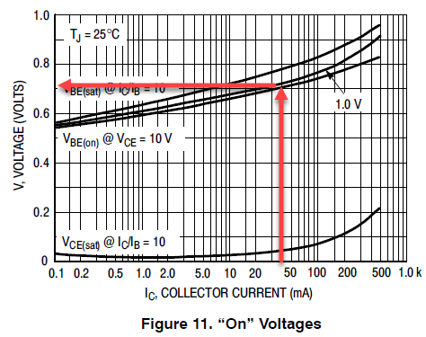
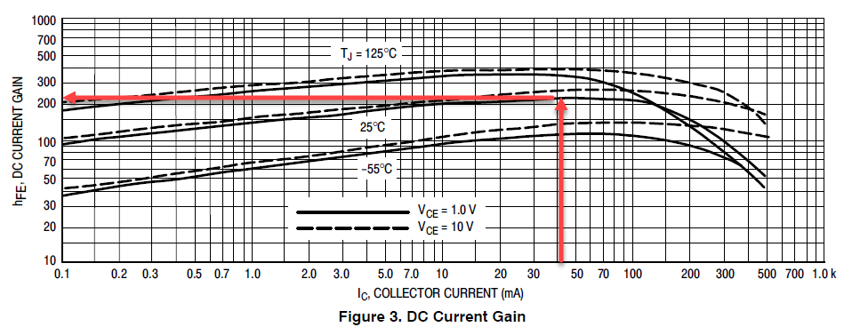

De transistor als schakelaar
Een DC motor trekt meer stroom dan een pin van je Arduino mag leveren. Met een transistor los je dat op: een kleine stroom uit je pin schakelt een veel grotere stroom uit een aparte voeding.
Je gebruikt de transistor hier dus niet om een signaal te versterken, maar als een schakelaar die je met software bedient. Hij staat ofwel helemaal open, ofwel helemaal dicht, en niets ertussen.
De drie aansluitingen
Een NPN-transistor heeft drie pootjes. Stuur je een kleine stroom in de basis, dan laat hij een veel grotere stroom door tussen collector en emitter.
| Aansluiting | Waar ze naartoe gaat |
|---|---|
| B (basis) | Via een weerstand naar de uitgangspin van de Arduino |
| C (collector) | Naar de motor |
| E (emitter) | Naar GND |
De motor hangt dus boven de transistor: van de plus van de voeding naar de collector. De transistor zit tussen de motor en de massa en laat de stroom er al dan niet door. In TinkerCAD is de 2N2222 gemodelleerd, en die gebruiken we hier.

De vrijloopdiode
Kijk op het schema hierboven eens naar het component dat over de motor heen staat, met het streepje naar de plus. Dat is een diode, en die staat daar niet toevallig.
Een motor is een spoel. Zolang er stroom door loopt zit er energie in het magnetisch veld, en een spoel laat zijn stroom niet zomaar ophouden. Schakelt de transistor uit, dan probeert de spoel die stroom te blijven duwen. Er is geen weg meer, dus de spanning over de spoel loopt op tot ze er wel eentje vindt: dwars door je transistor heen. Die spanningspiek is een veelvoud van je voedingsspanning en maakt een transistor stuk in een enkele schakeling.
De diode geeft die stroom een uitweg. In normale werking staat ze in sperrichting en doet ze niets. Op het moment dat je uitschakelt, staat ze in geleiding en laat ze de spoelstroom rustig rondlopen tot de energie op is. Vandaar de naam vrijloopdiode.
Dit geldt bij elke spoel die je schakelt: een motor, een relais, een elektromagneet. De diode staat omgekeerd over de spoel, dus met de streep aan de kant van de plus. Zet je ze per ongeluk andersom, dan sluit je je voeding kort.
In TinkerCAD kan je de diode weglaten en werkt alles gewoon door. Op een echt breadboard is dat het verschil tussen een schakeling die blijft werken en een transistor die na een minuut warm en dood is.
De basisweerstand berekenen
Tussen je Arduino-pin en de basis hoort een weerstand. Zonder die weerstand loopt er een ongelimiteerde stroom je basis in en gaat je pin, je transistor of allebei eraan. De vraag is dus: hoe groot moet ze zijn?
De formule is niets meer dan de wet van Ohm toegepast op de basiskring:
Je hebt dus drie dingen nodig. We werken het voorbeeld helemaal uit voor de motor van 80 mA uit De DC motor.
1. Vcc, de spanning op je pin
Een uitgangspin van de UNO die hoog staat geeft 5 V. Dus Vcc = 5 V.
2. Vbe, de spanning over de basis-emitterjunctie
Die zoek je op in de datasheet. Voor deze transistor is dat ongeveer 0,7 V. Dat is trouwens geen toeval: bij zowat elke siliciumtransistor kom je op ongeveer 0,7 V uit.

3. Ib, de stroom die je in de basis moet sturen
Die volgt uit de stroom die de motor trekt, gedeeld door de stroomversterkingsfactor hFE van de transistor:
Ic is de collectorstroom, en dat is gewoon de stroom door je motor: 80 mA. De hFE zoek je weer op in de datasheet.

Daar lees je een hFE van ongeveer 200 af. En hier komt de stap die je niet mag overslaan.
Reken je met de hFE uit de datasheet, dan stuur je precies genoeg basisstroom om die 80 mA te halen als alles meezit. Dat is te krap. De hFE verschilt sterk van exemplaar tot exemplaar, zakt bij hogere stroom en verandert met de temperatuur. Bovendien wil je dat de transistor in saturatie gaat: helemaal open, zodat er zo weinig mogelijk spanning over hem staat en hij dus zo weinig mogelijk warmte maakt. Een transistor die maar half openstaat verstookt het verschil.
Deel de hFE daarom flink door. Hier delen we 200 door 5 en rekenen we verder met hFE = 40. Je stuurt dan vijf keer meer basisstroom dan strikt nodig, en dat is precies de bedoeling.
De berekening
Met hFE = 40 wordt de basisstroom:
En daarmee de basisweerstand:
Die waarde bestaat niet als standaardweerstand. Je kiest de dichtstbijzijnde die je hebt liggen, en dat is 2,2 kΩ.
Je rondt hier naar boven af, van 2150 naar 2200 Ω, en dus stuur je een tikje minder basisstroom dan berekend. Dat mag, want in die 2 mA zat al een marge van factor 5. Zit je twijfelachtig dicht bij de grens, kies dan de kleinere weerstand: te veel basisstroom is zelden een probleem, te weinig wel.
Wat de transistor niet kan
Met deze schakeling kan je de motor aan- en uitzetten, en met analogWrite() op de basis ook zijn snelheid regelen. Wat je er niet mee kan, is de motor de andere kant op laten draaien: daarvoor zou je de twee draden van plaats moeten wisselen, en één transistor doet dat niet. Daar heb je een H-brug voor nodig.